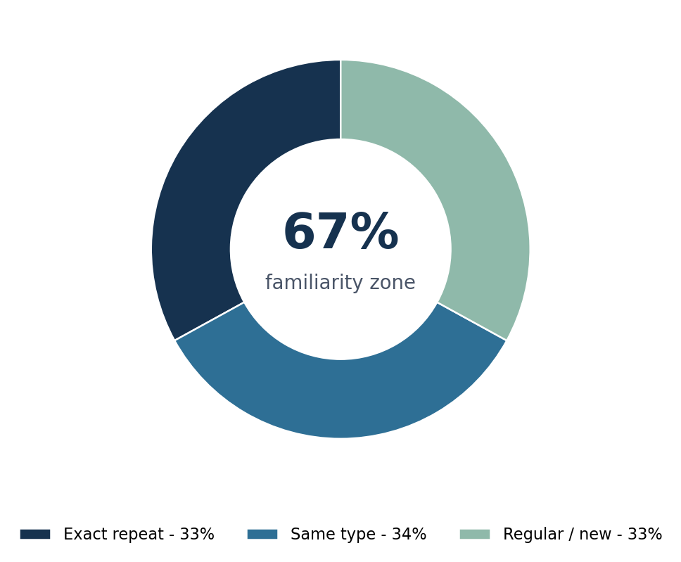
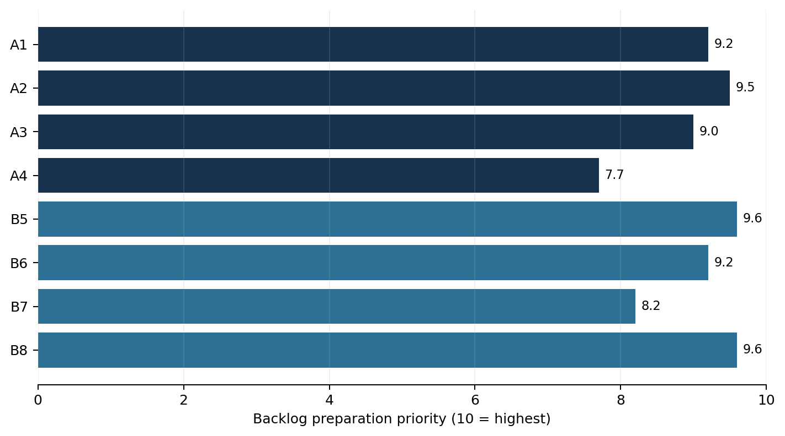
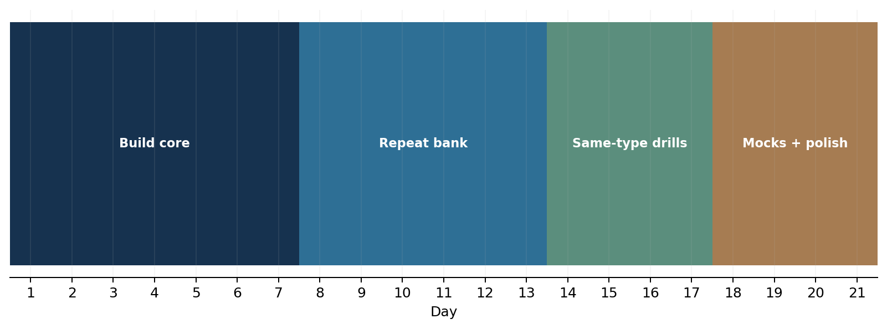

MATH 2123
COMPLETE BACKLOG
PREPARATION GUIDE
Repeat-first strategy • Same-type mastery • Regular-question survival

| PERSONAL BACKLOG MODEL 33% exact repeat + 34% same type + 33% regular/new. This guide treats that split as your planning assumption, not as a statistically verified rate from the uploaded papers. |
|---|
Made by K.I.Rohan
Built from the uploaded KUET Math 2123 term-question collection, topic-wise solved compilations, lecture notes and reference material.
| START HERE How to Use This Guide A backlog-safe system built around familiarity, method recognition and controlled risk. |
|---|
What this guide is - and is not
This is a preparation guide, not a prediction guarantee. The uploaded source set is dominated by regular term-final papers and topic-wise compilations. No separate backlog-paper archive was supplied. Therefore, the historical question evidence comes from the regular Math 2123 bank, while the 33% / 34% / 33% split is your personal backlog assumption.
| KEY CONSEQUENCE If your 33/34/33 model is approximately right, 67% of the paper lives in a familiarity zone: either an exact repeat or a recognizable template. The backlog strategy should therefore maximize recall + template recognition before spending large time on rare, novel variations. |
|---|
The 4-layer preparation stack
| Layer | Goal | What you do | Target |
|---|---|---|---|
| 1. Exact-repeat bank | Recall without thinking | Solve/rewrite repeated questions until the steps are automatic | 100% reproducible |
| 2. Same-type template bank | Adapt under changed numbers | Learn method triggers, setup and mutation patterns | Recognize in < 90 sec |
| 3. Regular/new coverage | Avoid blank answers | Know formulas, definitions, theorem selection and first steps | Salvage + partial/full marks |
| 4. Exam execution | Convert knowledge into marks | Choose 3 of 4 sets per section using confidence and time | No emotional question selection |
One rule throughout the guide
| 3 + 1 RULE You must answer 3 sets from each section out of 4. Prepare 3 sets to mastery and the 4th as an insurance set. Never enter a backlog exam with exactly 3 prepared sets; a single unusual question can destroy the plan. |
|---|
| STRATEGY ENGINE The 33 / 34 / 33 Model Turn the personal assumption into a rational study-time plan. |
|---|
Probability is not the same as study-time allocation
Exact repeats are cheaper to prepare than same-type questions. Same-type questions require method understanding, so they deserve slightly more study time than their probability share. Regular/new questions receive enough coverage to prevent blank answers, but they should not consume the majority of backlog preparation time.
| Preparation bucket | Paper assumption | Recommended study time | Why |
|---|---|---|---|
| Exact repeat | 33% | 35% | High return: memorized structure + known final route. |
| Same type | 34% | 40% | Highest adaptability demand; one template can cover many variants. |
| Regular / new | 33% | 25% | Cover fundamentals and salvage strategy rather than chasing every possible problem. |
How to tag every question in your bank
| Tag | Meaning | Study action |
|---|---|---|
| R1 - Repeat | Exact or near-exact historical repeat | Memorize clean solution path; timed reproduction. |
| R2 - Template | Same mathematical structure, changed data/path/matrix/load | Write the trigger + 5-step method; drill variants. |
| R3 - Regular | No strong repetition signal | Know concept, formula, setup and first 40-60% of solution. |
| BACKLOG MINDSET A difficult new question is allowed to exist. Your job is not to make every question easy; your job is to make at least 3 sets in each section reliably answerable. |
|---|
| SET DISTRIBUTION Eight Preparation Sets These are preparation buckets; historical papers sometimes move topics between Section A and Section B. |
|---|

| Set | Preparation bucket | Repeat character | Priority | Minimum backlog outcome |
|---|---|---|---|---|
| A1 | Matrix fundamentals, types, properties, short proofs | Theory repeats very strongly | Very High | Definitions + decomposition/properties secure |
| A2 | Inverse, rank, consistency, dependence / independence | Same-type numerical templates | Very High | Can classify and solve systems confidently |
| A3 | Echelon/canonical/normal form, eigenvalues, Cayley-Hamilton | Workflow repeats | Very High | One full matrix transformation + one eigen/C-H route |
| A4 | Vector kinematics, mechanics, geometry | Method-based; moderate variability | High | Velocity/acceleration + work/geometry basics |
| B5 | Direct Laplace, periodic, piecewise, unit step | Exact + template repeats | Very High | Periodic/unit-step/direct transform automatic |
| B6 | Inverse Laplace, convolution, ODE/integral equation, beam | Template-heavy | Very High | Convolution + ODE + one beam family |
| B7 | Gradient, directional derivative, div/curl, tangent/normal | Concept + formula template | High | Operator use + physical meaning + tangent plane |
| B8 | Line, surface, volume integration; Green/Stokes/Gauss | Exact + same-type repeats | Very High | Correct theorem and limits, no setup errors |
| BEST GENERAL BACKLOG CONFIGURATION Section A: master A1 + A2 + A3, keep A4 as insurance. Section B: master B5 + B8, then choose B6 or B7 as your third core set based on personal strength; keep the other as insurance. |
|---|
| SECTION A Preparation Map Master 3 sets, prepare the 4th as an insurance route. |
|---|
Section A selection logic
| Profile | Core sets | Insurance | Reason |
|---|---|---|---|
| Matrix-strong | A1 + A2 + A3 | A4 | Highest repeat/template concentration. |
| Vector-comfortable | A1 + A2 + A4 | A3 | Use vector methods if eigen/normal-form work is slow. |
| Very short preparation | A1 + A2 + A3 | A4 definitions only | Matrix questions are more procedural and easier to checklist. |
Section A non-negotiables
• Never confuse symmetric (Aᵀ = A), skew-symmetric (Aᵀ = -A), orthogonal (AᵀA = I), singular (det A = 0), idempotent (A² = A), involutory (A² = I).
• For consistency questions, always compare rank(A), rank([A|B]) and the number of unknowns; do not decide by intuition.
• For eigenvalues, write det(A - λI) = 0 clearly before solving. For eigenvectors, substitute each λ into (A - λI)X = 0.
• For Cayley-Hamilton, first obtain the characteristic polynomial correctly; a sign error destroys the rest.
• For vector motion, differentiate the position vector componentwise; speed is |v|, not v.
| SECTION A GOAL Have three complete set scripts that you can finish even under stress, plus one rescue set whose definitions/formulas can still earn partial marks. |
|---|
| SET A1 Matrix Fundamentals & Repeat-Theory Bank High-return definitions, properties and short proofs. |
|---|
Why A1 is backlog gold
The theory compilation shows repeated matrix definitions across many years. Orthogonal matrix alone appears in multiple papers, while singular matrix, rank, symmetric/skew-symmetric and eigen concepts recur repeatedly. This is the cheapest source of reliable marks because the wording changes less than long numerical problems.
| Priority | Question / concept | Evidence in uploaded bank | Backlog action |
|---|---|---|---|
| ★★★★★ | Orthogonal matrix + property A⁻¹ = Aᵀ | Appears repeatedly across 2016, 2018, 2019, 2022, 2023, 2024 | Memorize definition, verification method and direction-cosine proof. |
| ★★★★★ | Symmetric + skew-symmetric decomposition | 2017 & 2018 proof family | Know A = ½(A+Aᵀ)+½(A-Aᵀ), including uniqueness idea. |
| ★★★★☆ | Singular / non-singular matrix | Repeated definition family | Definition + determinant test + one 2×2 example. |
| ★★★★☆ | Rank of matrix | Repeated 2019, 2023, 2024 definition family | Definition + number of non-zero echelon rows. |
| ★★★★☆ | Eigenvalue / eigenvector definition | Repeated theory family | Definition + characteristic equation. |
| ★★★☆☆ | Diagonal, elementary, Hermitian, idempotent, triangular | Rotating definition bank | Prepare 1-line definition + example each. |
A1 exact-answer template
1. Write the definition in mathematical form.
2. Give the minimum correct condition (e.g., AᵀA = I).
3. Add one clean example if asked.
4. For proof questions, use the definition immediately; avoid narrative filler.
A1 45-minute drill
| Minutes | Task |
|---|---|
| 0-10 | Write 10 matrix definitions from memory. |
| 10-20 | Prove diagonal entries of a skew-symmetric matrix are zero; prove inverse of symmetric non-singular matrix is symmetric. |
| 20-35 | Do one symmetric + skew-symmetric decomposition numerical problem. |
| 35-45 | Verify one matrix is/is not orthogonal; check answer presentation. |
| PASS-SAVING DETAIL If a proof is forgotten, start from the defining equation. Example: skew-symmetric means aᵢⱼ = -aⱼᵢ; set i = j to immediately get aᵢᵢ = 0. |
|---|
| SET A2 Inverse, Rank, Consistency & Linear Dependence The strongest same-type matrix workflow set. |
|---|
Recognition triggers
| Question wording | Immediate method |
|---|---|
| “Find inverse using elementary transformation” | Augment [A | I] and row-reduce to [I | A⁻¹]. First check whether inversion is possible. |
| “Find rank” | Convert to echelon/normal form; count non-zero rows / pivots. |
| “For what value of k is the system consistent / unique / infinite / no solution?” | Row-reduce [A|B], then compare ranks and unknown count. |
| “Linearly dependent or independent?” | Use determinant (square set) or rank / non-trivial combination. |
| “Solve by matrix method” | Form AX=B, then use inverse/elimination as suitable. |
The consistency decision table
| Condition | Meaning | Conclusion |
|---|---|---|
| rank(A) ≠ rank([A|B]) | Contradictory augmented row appears | No solution / inconsistent |
| rank(A) = rank([A|B]) = n | Pivot for every unknown | Unique solution |
| rank(A) = rank([A|B]) < n | Free variable(s) | Infinitely many solutions |
Same-type mutation patterns
• Parameter k moves from a coefficient to the right-hand side, but the rank test is unchanged.
• A 3×3 inverse becomes a 4×4 inverse: the process is the same, only arithmetic grows.
• Linear-dependence questions may be written as vectors, rows of a matrix or homogeneous equations; convert them to one consistent framework.
• Network-flow style equations are still linear systems: define unknowns carefully before elimination.
| COMMON BACKLOG ERROR Do not continue an inverse calculation after a pivot collapse proves the matrix is singular. State clearly that A⁻¹ does not exist and justify it by det(A)=0 or rank(A)<n. |
|---|
| SET A3 Normal Form, Eigenvalues & Cayley-Hamilton Procedural, high-value, and very trainable. |
|---|
A3 core workflow 1 - Echelon → Canonical → Normal form
1. Use elementary row operations to create pivots and zeros below them.
2. Continue to reduced/canonical structure as required.
3. If column operations are allowed, reduce to the normal form diag(Iᵣ,0).
4. Rank = r, the number of pivots / identity entries.
5. If asked for P and Q such that PAQ is normal form, track operations or construct the required elementary products carefully.
A3 core workflow 2 - Eigenvalue → Eigenvector
1. Form det(A - λI) = 0.
2. Solve the characteristic equation for λ.
3. For each eigenvalue, solve (A - λI)X = 0.
4. Choose a convenient non-zero scalar multiple for the eigenvector.
5. Use trace/determinant checks when practical: sum of eigenvalues = trace(A); product = det(A).
A3 core workflow 3 - Cayley-Hamilton
| C-H TEMPLATE If p(λ)=λⁿ+c₁λⁿ⁻¹+…+cₙ is the characteristic polynomial, then p(A)=0. Use this identity to reduce high powers of A or express A⁻¹ when A is non-singular. |
|---|
Same-type mutation patterns
• Different numerical matrix; identical eigen workflow.
• “Largest eigenvalue” only changes which eigenvector you finally report.
• A power such as A⁵ or A⁻¹ appears; reduce it using the characteristic identity.
• Normal-form questions change matrix size but still depend on systematic elementary operations.
| SET A4 Vector Kinematics, Mechanics & Geometry Your Section A insurance set - or a core set if vectors are stronger than matrices. |
|---|
Fast formula bank
| Topic | Formula / trigger | What examiners usually change |
|---|---|---|
| Motion | v = dr/dt, a = dv/dt, speed = |v| | Position vector, evaluation time, direction. |
| Unit tangent | T = v/|v| | Curve and point/time. |
| Work done | W = ∫C F·dr | Path: direct, parametric, piecewise, curve relation. |
| Direction cosine / angle | cosθ = (a·b)/(|a||b|) | Vectors/surfaces. |
| Scalar triple product | a·(b×c) | Volume / coplanarity interpretation. |
| Vector triple product | a×(b×c)=b(a·c)-c(a·b) | Proof + identity manipulation. |
A4 backlog method
1. Parameterize first; do not integrate in mixed variables.
2. Write dr explicitly before F·dr.
3. For motion, evaluate derivatives before substituting the requested time unless simplification is obvious.
4. When asked for physical/geometrical meaning, give both the formula and one sentence of interpretation.
| INSURANCE SET RULE If A4 is only your insurance set, prioritize motion + work done + scalar/vector triple-product theory. These are more reusable than rare geometric subcases. |
|---|
| SECTION B Preparation Map Two high-confidence anchors (B5, B8) + one chosen core (B6 or B7) + one insurance. |
|---|
Choose your third core set
| If you are better at… | Choose as core | Keep as insurance | Why |
|---|---|---|---|
| Algebra / transforms | B6 | B7 | Inverse Laplace, convolution and ODEs are procedural. |
| Vector calculus / geometry | B7 | B6 | Gradient, directional derivative and div/curl rely on compact formulas. |
| Unsure | B6 first, B7 second | Whichever is slower after 2 mocks | B6 also covers beam/ODE families, so it has broader payoff. |
Section B anchors
| B5 ANCHOR Periodic / piecewise / unit-step Laplace has strong repetition and very stable formulas. |
|---|
| B8 ANCHOR Line/surface/volume integration has repeated exact questions and repeated theorem-selection patterns. Setup accuracy is the main scoring skill. |
|---|
| SET B5 Direct Laplace, Periodic, Piecewise & Unit Step One of the highest-return backlog sets. |
|---|
Exact-repeat signal
The uploaded unit-step compilation identifies the same periodic piecewise function as repeated in 2021, 2022 and 2024: F(t)=3t for 0<t<2, F(t)=6 for 2<t<4, with period 4. This is a model example of why periodic-function technique belongs in the exact-repeat bank.
| Question family | Trigger formula | Backlog status |
|---|---|---|
| Periodic function | L{f} = [1/(1-e^{-sT})] ∫₀ᵀ e^{-st}f(t)dt | R1/R2 - must master |
| Unit step | u(t-a)=0 before a, 1 after a | R1/R2 - must master |
| Second shifting | L{f(t-a)u(t-a)}=e^{-as}F(s) | R1/R2 - must master |
| Piecewise direct definition | Split ∫₀∞ at break points | R2 - very common |
| Multiplication by tⁿ | L{tⁿf(t)}=(-1)ⁿ dⁿF/dsⁿ | R2 - formula based |
| Derivative transform | L{f⁽ⁿ⁾}=sⁿF - sⁿ⁻¹f(0)-… | R2/R3 |
Same-type mutation checklist
• Period 4 becomes 2π or another T.
• Breakpoints 2 and 4 become a and b.
• A delayed sine/cosine replaces a delayed polynomial.
• A graph is given instead of a formula; read intervals carefully.
• The question asks you to express the function in unit-step form before transforming it.
| B5 SCORING RULE If the function is periodic, write the periodic-transform formula before doing any integration. If it is delayed, rewrite around (t-a) before using the shift theorem. |
|---|
| SET B6 Inverse Laplace, Convolution, ODEs & Beam Deflection Template-heavy; preparation depth pays off. |
|---|
Method-selection table
| Expression / problem | Best first method |
|---|---|
| Rational F(s), easy factorization | Partial fractions + standard inverse table |
| Product F(s)G(s) | Convolution theorem if partial fractions are awkward |
| Shifted denominator (s-a)²+b² | First shifting / complete the square |
| Initial-value ODE | Transform derivatives, substitute initial values, solve Y(s), invert |
| Integral equation | Transform both sides; use L{∫₀ᵗf(u)du}=F(s)/s |
| Beam deflection | EI y⁽⁴⁾=w(x); encode load with unit step, transform, apply boundary conditions |
Beam family - same type, different support/load
| Historical family | Support / load type | What to memorize |
|---|---|---|
| 2017 | Cantilever, discontinuous UDL | Clamped: y=y′=0; free: y″=y‴=0 |
| 2018 | Clamped-clamped, discontinuous triangular load | Both ends: y=y′=0 |
| 2019 | Clamped-simply supported, discontinuous UDL | Left y=y′=0; right y=y″=0 |
| 2022 | Simply supported, continuous UDL | Both ends: y=y″=0 |
| BEAM SURVIVAL FORMULA Clamped/embedded: y=0, y′=0. Simply supported/hinged: y=0, y″=0. Free end: y″=0, y‴=0. These boundary conditions are more important than memorizing one final deflection expression. |
|---|
B6 minimum viable mastery
• 2 inverse-Laplace partial-fraction problems
• 2 convolution problems
• 2 initial-value ODEs
• 1 integral equation
• 1 discontinuous-load beam + 1 simply supported beam
| SET B7 Vector Differential Calculus Compact formulas; strong rescue potential. |
|---|
Core operator table
| Operation | Definition | Question trigger |
|---|---|---|
| Gradient | ∇φ = φₓ i + φᵧ j + φ_z k | Normal to level surface; maximum directional derivative |
| Directional derivative | Dᵤφ = ∇φ·u | “In the direction of…” |
| Divergence | ∇·F = Pₓ+Qᵧ+R_z | Solenoidal / source-sink |
| Curl | ∇×F | Irrotational / rotation |
| Laplacian | ∇²φ = φₓₓ+φᵧᵧ+φ_zz | Harmonic potential / identity |
| Tangent plane | ∇F(P)·[(x,y,z)-P]=0 | Surface F(x,y,z)=0 at a point |
Physical meaning - easy theory marks
• Gradient points in the direction of greatest increase and is normal to the level surface.
• Divergence measures net outward flux density; zero divergence means solenoidal.
• Curl measures local rotation; zero curl means irrotational under suitable domain conditions.
• The maximum directional derivative is |∇φ| and occurs along ∇φ.
Same-type mutations
• Different scalar field and point; same gradient/directional-derivative workflow.
• Surface equation changes; tangent-plane formula stays identical.
• Parameters a,b,c are chosen to make a vector field solenoidal or irrotational; set coefficients of divergence/curl to zero.
• Potential-function problems ask you to integrate components consistently and reconcile constants.
| B7 RESCUE VALUE Even when arithmetic becomes messy, correct ∇, divergence/curl setup, unit direction vector and tangent-plane formula can preserve substantial partial credit. |
|---|
| SET B8 Line, Surface & Volume Integration A major repeat zone - but setup errors are fatal. |
|---|
Exact / near-exact repeats documented in the uploaded integration compilation
| Repeat family | Years | What repeats |
|---|---|---|
| Piecewise vs direct line integral | 2016 & 2017 | Same vector field/path family. |
| Work on curve x²=4y, 3x³=8z | 2020 & 2024 | Same force-field/curve question family. |
| Cylinder surface flux x²+y²=16, first octant, 0≤z≤5 | 2018 & 2023 | Same surface-flux family. |
| Volume integral of div F on cube 1≤x,y,z≤3 | 2022 & 2023 | Same volume-divergence family. |
| Green theorem triangle/circle | Multiple years | Different P,Q and region; same conversion template. |
Theorem selection in 15 seconds
| You see… | Think… | Check |
|---|---|---|
| Closed planar line integral ∮ Pdx+Qdy | Green | Orientation positive/CCW; region simple? |
| ∮C F·dr and C bounds a surface | Stokes | Curl easier than direct line integral? |
| Closed surface flux ∬S F·n dS | Gauss | Surface genuinely closed? |
| Open surface flux | Direct surface integral | Choose projection / parameterization. |
| Work along a specified open path | Direct line integral | Parameterize each segment/curve. |
B8 error-control checklist
• Write the region limits before integrating.
• For cylindrical coordinates, include the Jacobian r in dV.
• For sphere/cylinder surface elements, do not use volume Jacobians by mistake.
• Check outward vs inward normal and path orientation.
• If a path is piecewise, split it explicitly and add segment results.
| HIGH-YIELD PRACTICE Solve every repeated B8 family once slowly, then twice under time. After that, practice changed geometry rather than repeating identical arithmetic. |
|---|
| MASTER BANK Exact / Near-Exact Repeat Priority Ranked by repetition evidence and backlog usefulness. |
|---|
| Rank | Question family | Repeat evidence | Set | Required mastery |
|---|---|---|---|---|
| 1 | Orthogonal matrix definition / verification / proof family | Multiple papers (2016, 2018, 2019, 2022, 2023, 2024) | A1 | Word-perfect definition + verification + direction-cosine proof |
| 2 | Periodic piecewise Laplace: 3t / 6, period 4 | 2021, 2022, 2024 | B5 | Full transform from formula without notes |
| 3 | Rank definition / rank method | 2019, 2023, 2024 theory family | A1/A2 | Definition + echelon method |
| 4 | Laplace transform definition | 2019, 2020, 2022 theory family | B5 | Definition + sufficient conditions nearby |
| 5 | Singular matrix definition | 2015, 2021, 2023 theory family | A1 | Definition + determinant test |
| 6 | Eigenvalue/eigenvector definition | 2016, 2017, 2018 theory family | A3 | Definition + characteristic route |
| 7 | Symmetric + skew decomposition proof | 2017, 2018 | A1 | Formula + uniqueness outline |
| 8 | Piecewise/direct line integral family | 2016, 2017 | B8 | Both paths correctly parameterized |
| 9 | Work on x²=4y, 3x³=8z curve | 2020, 2024 | B8 | Parameterize in x and integrate cleanly |
| 10 | Cylinder surface flux family | 2018, 2023 | B8 | Normal + cylindrical surface element |
| 11 | Volume div-F cuboid family | 2022, 2023 | B8 | Divergence + direct triple integral |
| 12 | cos(at)/t Laplace non-existence theory | 2015, 2024 | B5 | Limit/condition explanation |
| HOW TO USE THIS PAGE R1 questions should be executable from a blank sheet. Do not merely recognize them while reading the solution. Recognition without reproduction is not backlog-ready. |
|---|
| MASTER BANK Same-Type Mutation Guide Learn how a setter changes the surface while preserving the method. |
|---|
| Template | Common mutations | Invariant method |
|---|---|---|
| Rank / consistency | Parameter k moved; coefficients changed; homogeneous ↔︎ non-homogeneous | Row-reduce and compare ranks. |
| Inverse matrix | Matrix size/entries changed | [A|I] → [I|A⁻¹], but check singularity first. |
| Eigen / C-H | New matrix; ask largest λ, power, inverse | Characteristic polynomial → p(A)=0. |
| Vector motion | New r(t), new evaluation time | Differentiate componentwise; speed magnitude. |
| Direct Laplace | New polynomial/trig/exponential mix | Linearity + table + shifting/differentiation properties. |
| Periodic / unit step | New period and breakpoints | Rewrite intervals; apply standard periodic/shift formula. |
| Inverse Laplace | Factorization changes | Partial fractions / shift / convolution selection. |
| ODE | New constant coefficients / RHS | Transform derivatives, insert initial data, solve Y(s), invert. |
| Beam | Support and load pattern change | Boundary conditions + unit-step load + 4th-order transform. |
| Directional derivative | New scalar field, point, direction vector | Compute ∇φ, normalize direction, dot product. |
| Surface flux | New plane/cylinder/sphere | Find normal and correct surface element / theorem. |
| Closed integral | New curve/field | Select Green/Stokes/Gauss from geometry. |
The 5-step template card
1. Trigger: identify the question family.
2. Formula: write the governing formula before arithmetic.
3. Setup: substitute data and choose limits/parameterization.
4. Execution: calculate in small auditable steps.
5. Check: sign, boundary, rank, orientation, units or final substitution.
| MEMORY BANK Theory + Proof Priority for Backlog Short questions can rescue a set even when the long numerical part is difficult. |
|---|
| Tier | Theory / proof | Set | Preparation standard |
|---|---|---|---|
| Tier 1 | Orthogonal matrix; A⁻¹=Aᵀ; direction-cosine orthogonality proof | A1 | Full |
| Tier 1 | Every square matrix = symmetric + skew-symmetric (unique) | A1 | Full proof |
| Tier 1 | Diagonal entries of skew-symmetric matrix are zero | A1 | Full proof |
| Tier 1 | Rank / consistent system / trivial vs non-trivial | A1/A2 | Definitions + conditions |
| Tier 1 | Eigenvalue/eigenvector definition + properties | A3 | Definition + 3 properties |
| Tier 1 | Laplace definition + sufficient conditions | B5 | Full theory |
| Tier 1 | Unit step + shifting theorem | B5 | Definition + formula |
| Tier 1 | Convolution theorem statement | B6 | Statement + inverse-use form |
| Tier 1 | Physical meaning of gradient/divergence/curl | B7 | 2-3 lines each |
| Tier 1 | Scalar triple product geometrical meaning | A4/B7 | Volume + coplanarity |
| Tier 2 | Vector triple-product identity / Jacobi identity | A4 | Proof outline |
| Tier 2 | Why L{cos at/t} does not exist | B5 | Condition + t→0 argument |
| Tier 2 | Green / Stokes / Gauss statements | B8 | Statement + when to use |
| Tier 2 | Beam boundary conditions | B6 | Memorize all three support types |
Proof-writing template
| Step | What to write |
|---|---|
| 1 | State the defining equation / theorem condition. |
| 2 | Apply transpose, determinant, dot/cross identity, transform definition, etc. |
| 3 | Simplify one line at a time; label any key property. |
| 4 | End with the exact statement being proved. |
| DO NOT MEMORIZE PROSE Memorize proof skeletons and mathematical transitions. Under stress, equations are easier to reconstruct than paragraphs. |
|---|
| PRIMARY SCHEDULE 21-Day Backlog Preparation Plan Designed for incomplete preparation and limited confidence. |
|---|

| Day | Main target | Output before sleeping |
|---|---|---|
| 1 | A1 definitions + symmetric/skew proofs | 10 definitions from memory + 2 proofs |
| 2 | A2 rank + inverse | 2 rank + 2 inverse problems |
| 3 | A2 consistency + dependence | 3 parameter-system problems |
| 4 | A3 normal/echelon form | 2 full reductions |
| 5 | A3 eigen + C-H | 2 eigen + 1 C-H problem |
| 6 | A4 motion + work | 2 motion + 2 work questions |
| 7 | Section A timed mixed test | Attempt 3 sets; mark weak steps |
| 8 | B5 direct Laplace | 15 transform drill items |
| 9 | B5 periodic + unit step | Periodic repeat + 3 shifted functions |
| 10 | B6 inverse + convolution | 4 inverse + 2 convolution |
| 11 | B6 ODE / integral equation | 3 IVP + 1 integral equation |
| 12 | B6 beam | 2 beam families + boundary-condition recall |
| 13 | B7 grad/div/curl + tangent | 6 short problems |
| 14 | B8 line integrals | 3 direct + 2 Green |
| 15 | B8 surface integrals | 3 flux / Stokes / Gauss problems |
| 16 | B8 volume integrals | 3 volume setups + 2 full evaluations |
| 17 | Exact-repeat bank | Reproduce top 12 without looking |
| 18 | Same-type mutation drill | 8 changed-data variants |
| 19 | Full mock 1 | 3 sets A + 3 sets B under time |
| 20 | Full mock 2 + error repair | Repeat only weak templates |
| 21 | Light revision | Formula/theory cards + selection strategy + sleep |
| COMPRESSED SCHEDULE 14-Day Plan When you have two weeks, cut breadth - not repetition quality. |
|---|
| Day | Core work |
|---|---|
| 1 | A1 full + theory bank |
| 2 | A2 rank/inverse |
| 3 | A2 consistency + A3 normal form |
| 4 | A3 eigen/C-H + A4 rescue formulas |
| 5 | Section A repeat bank + timed 3-set drill |
| 6 | B5 direct + periodic |
| 7 | B5 unit step + B6 inverse/convolution |
| 8 | B6 ODE + beam |
| 9 | B7 full rescue set |
| 10 | B8 line + Green |
| 11 | B8 surface + Gauss/Stokes |
| 12 | B8 volume + exact repeats |
| 13 | Full mock + repair |
| 14 | Second mock sections + final theory/formula sweep |
14-day deletion rule
• Do not start rare reference-book problems unless all R1 and R2 material is stable.
• Do not spend an hour polishing one difficult proof while core numerical templates remain weak.
• Do not reread notes passively; every session must end with written output.
| EMERGENCY SCHEDULE 7-Day Backlog Rescue Plan For survival: maximize familiar marks and reduce blank-set risk. |
|---|
| Day | Morning / first block | Evening / second block |
|---|---|---|
| 1 | A1 theory + repeated proofs | A2 rank/inverse |
| 2 | A2 consistency | A3 eigen/C-H |
| 3 | A3 normal form + A4 motion/work rescue | Section A 3-set timed selection |
| 4 | B5 periodic/unit-step/direct | B6 inverse/convolution |
| 5 | B6 ODE/beam basics | B7 gradient/div/curl rescue |
| 6 | B8 repeated line/surface/volume families | B8 theorem-selection + limits |
| 7 | Top exact repeats + theory cards | One short mock + final error list; stop heavy study early |
| 7-DAY RULE You are not trying to “finish the syllabus.” You are trying to build six answerable sets plus two rescue options. Every hour must improve that outcome. |
|---|
Emergency minimum
• Section A: A1 + A2 + A3 must be attemptable.
• Section B: B5 + B8 must be attemptable; choose B6 or B7 as the third.
• Memorize Tier-1 theory list completely.
• Reproduce the top 12 repeat bank once on the final two days.
| DAILY SYSTEM 3-Hour and 6-Hour Study Routines Backlog progress requires written practice, not reading time. |
|---|
If you have 3 hours/day
| Block | Time | Task |
|---|---|---|
| Recall | 20 min | Definitions/formulas from blank paper |
| Core problem | 70 min | One set family - 2 to 4 full questions |
| Repeat bank | 35 min | R1 reproduction |
| Mutation drill | 35 min | One R2 variation |
| Error log | 20 min | Rewrite mistakes + tomorrow targets |
If you have 6 hours/day
| Block | Time | Task |
|---|---|---|
| Recall warm-up | 30 min | Formula/theory cards |
| Set 1 | 90 min | Core numerical set |
| Set 2 | 90 min | Second core set |
| Repeat bank | 60 min | R1 timed reproduction |
| Same-type drill | 60 min | Changed-data questions |
| Review | 30 min | Error log + weak theory |
The error log - mandatory columns
| Question | Error type | Why it happened | Correct trigger | Re-test date |
|---|---|---|---|---|
| Example | Wrong surface normal | Skipped geometry check | Find ∇g and orientation before integration | Tomorrow |
| TESTING SYSTEM Mock Exams That Actually Improve Backlog Performance Do not use mocks only to measure yourself - use them to change selection behavior. |
|---|
Three mock levels
| Level | Format | Purpose |
|---|---|---|
| Micro mock | 1 set, 30-35 min | Check whether a set is truly exam-ready. |
| Section mock | 4 sets shown; choose and answer 3 | Train selection under uncertainty. |
| Full mock | Both sections; 3+3 answer rule | Train time, switching cost and fatigue. |
Set readiness score
| Criterion | 0 | 1 | 2 |
|---|---|---|---|
| Recognition | Do not know method | Know method after thinking | Recognize immediately |
| Setup | Need notes | Minor hesitation | Correct setup from memory |
| Execution | Cannot finish | Finish with errors | Finish cleanly in time |
| Theory backup | None | Some definitions | Full short-question coverage |
Score each set out of 8. A core set should reach 7-8 before the exam. An insurance set can be 5-6 if its short theory and first steps are reliable.
After every mock
1. Circle every question you should have skipped.
2. Mark time lost to arithmetic versus method confusion.
3. Rewrite only the wrong step - then re-solve the full question the next day.
4. Update your 3+1 set selection if one insurance set becomes stronger than a core set.
| EXAM EXECUTION 3-of-4 Selection and Time Control The backlog paper is not the place to prove bravery. |
|---|
First 8 minutes: scan, classify, choose
| Mark | Meaning | Action |
|---|---|---|
| G - Green | Exact repeat / fully familiar | Choose first |
| Y - Yellow | Same type, but arithmetic or wording changed | Choose if method is clear |
| R - Red | New, unclear, or time-heavy | Avoid unless needed |
Selection algorithm
1. In each section, identify at least 2 Green sets.
2. Choose the third set from Green/Yellow based on method certainty, not topic preference.
3. Keep the fourth set as a fallback until you confirm no hidden difficulty in your chosen three.
4. Start with the highest-confidence set to bank marks and calm arithmetic.
5. If stuck for 6-8 minutes with no setup progress, move to the next sub-question or set.
Answer presentation for partial credit
• Write the theorem/formula before substitution.
• Show matrix operations line by line.
• Draw a small region/support sketch when limits or beam conditions matter.
• Box or underline the final result.
• If you cannot finish, leave a correct setup rather than an empty space.
| DO NOT OVERCOMMIT A backlog candidate loses more from spending 35 minutes on one bad question than from leaving a difficult sub-part after writing the correct setup. Protect the six-set plan. |
|---|
| RISK CONTROL Mistakes That Turn Familiar Questions into Lost Marks Most backlog damage is procedural, not conceptual. |
|---|
| Failure mode | Why it happens | Prevention |
|---|---|---|
| Memorized answer but changed data unnoticed | Exact-repeat bias | Underline every changed coefficient, limit, breakpoint and initial condition. |
| Using inverse for a singular matrix | Autopilot | Check det/rank before claiming A⁻¹ exists. |
| Wrong rank conclusion | Skipping augmented matrix | Always write rank(A) and rank([A|B]) explicitly. |
| Wrong eigen sign | Characteristic determinant expansion error | Use trace/determinant sanity checks. |
| Unit-step shift not rewritten in (t-a) | Pattern memory without algebra | Convert g(t) to g((t-a)+a) before transform. |
| Beam boundary conditions mixed up | Support types not memorized | Use a 3-row support-condition card daily. |
| Missing Jacobian r | Rushing cylindrical triple integral | Write dV first. |
| Wrong normal/orientation | Diagram skipped | Sketch and label outward/positive direction. |
| Passive revision | Feels productive | End every study block with a closed-book written test. |
| FINAL PHASE Last 24 Hours No new chapters. Stabilize the marks you already built. |
|---|
Do
• Reproduce the exact-repeat master bank without solutions.
• Read only your error log and Tier-1 theory/proof cards.
• Do one 20-minute set-selection drill from a past paper - do not complete the whole paper.
• Check beam boundary conditions, periodic formula, unit-step shift, consistency ranks, theorem-selection rules.
• Prepare stationery, sleep, and stop heavy calculation early enough to protect concentration.
Do not
• Open a new reference-book chapter.
• Attempt the hardest unsolved problem “for confidence.”
• Memorize final numerical answers without the method.
• Change all your core sets because of one bad practice question.
| FINAL RECALL CARD A1 definitions/proofs • A2 rank/consistency • A3 eigen/C-H • A4 v,a,work • B5 periodic/unit-step • B6 inverse/convolution/beam BC • B7 grad/div/curl • B8 Green/Stokes/Gauss + limits |
|---|
| ONE-PAGE DASHBOARD Backlog Priority Matrix Use this as the final revision checklist. |
|---|
| Set | R1 repeat bank | R2 template bank | R3 fundamentals | Ready? |
|---|---|---|---|---|
| A1 | Orthogonal; definitions; decomposition | Property/proof variants | All matrix-type definitions | □ |
| A2 | Rank definition families | Inverse; consistency; dependence | Elementary operations | □ |
| A3 | Eigen definition families | Normal form; eigen; C-H | Characteristic polynomial | □ |
| A4 | Triple-product theory | Motion; work; geometry | Vector products | □ |
| B5 | Periodic 3t/6; Laplace definition | Piecewise; unit step; shift | Transform table | □ |
| B6 | Convolution/theory families | Inverse; ODE; beam | Derivative/integral properties | □ |
| B7 | Physical meaning theory | Directional derivative; tangent; solenoidal/irrotational | ∇ operator | □ |
| B8 | Repeated line/surface/volume families | Green/Stokes/Gauss variants | Parameterization + limits | □ |
Readiness thresholds
| Status | Definition |
|---|---|
| CORE | Can score 7-8/8 on the readiness rubric and finish a set under time. |
| INSURANCE | Can score 5-6/8; theory + setup are safe even if the long calculation varies. |
| NOT READY | Recognition or setup still depends on looking at notes. |
| FINAL PRINCIPLE Backlog preparation is an optimization problem: secure the repeated and template marks first, keep one insurance set per section, and use fundamentals to survive the truly regular/new 33%. |
|---|
| SOURCE BASIS What This Guide Uses Transparent separation between source evidence and planning assumption. |
|---|
Uploaded source evidence used
| Source | How it informed the guide |
|---|---|
| Math 2123 Term Questions (2015-2025) | Set/topic history and question-style context. |
| KUET Math-III Theory & Proofs (2015-2024) | Repeated definitions, theory and proof families. |
| KUET Vector Integration Solutions (2015-2024) | Exact/near-exact line, surface and volume repeats and theorem patterns. |
| KUET Unit Step Function Guide (2015-2024) | Repeated periodic/unit-step question families. |
| KUET Beam Deflection Manual (2015-2024) | Four beam appearances, support types and boundary-condition patterns. |
| Lecture notes + reference books | Formula/method reinforcement and terminology. |
Planning assumption supplied by the student
| 33% / 34% / 33% The exact-repeat / same-type / regular split is treated as a personal backlog model. It is not presented here as a measured historical frequency because the supplied archive is primarily regular-exam material rather than a dedicated backlog-paper archive. |
|---|
Recommended next step
Print or annotate this guide. Mark each set as CORE / INSURANCE / NOT READY, then begin with the 21-day, 14-day or 7-day schedule that matches your remaining time. Do not change schedules mid-cycle unless your mock-readiness scores clearly justify it.
Made by K.I.Rohan
MATH 2123 • COMPLETE BACKLOG PREPARATION GUIDE